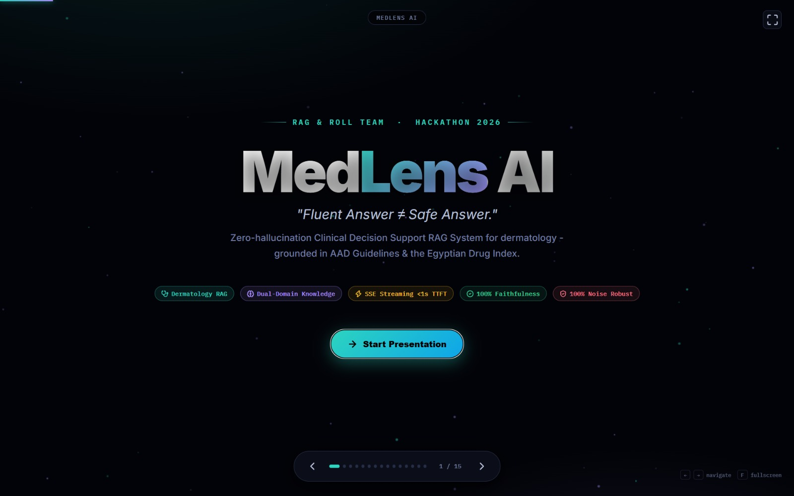

AI / RAG Architecture
Source
Clinical Decision Support RAG System
An AI-powered clinical decision support system built with Retrieval-Augmented Generation (RAG), designed to provide grounded answers from trusted medical guidelines. Features schema-aware chunking, intent-based routing, grounded generation with citations, and safety/evaluation mechanisms.
⚡ Grounded Guidelines
🎯 Intent-Routed Multi-Stage RAG
🛡️ Safety-Checked Citations
RAG
NLP
Python
LLM
Healthcare AI